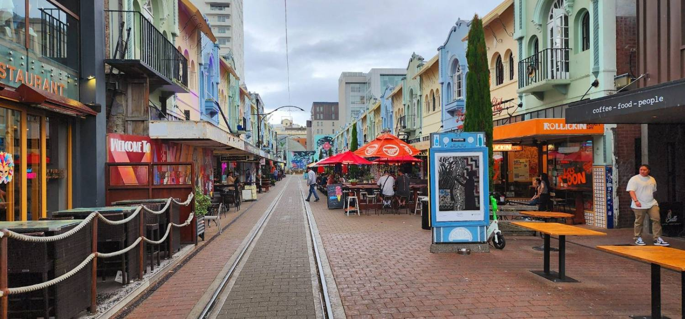

The last question
What happens once we land?
Everything before this was decisions. This part is errands — a long list of small things that all seem to depend on each other, usually while you are jet-lagged and starting a new job. We understand that it is a strange few weeks: the big move is behind you and yet nothing works yet. The good news is that the list is shorter than the one before the flight, and it has a natural order.

The first fortnight
Five things, roughly in this order
Most of the first two weeks hangs off the first two items, so it is worth doing them early even if you do nothing else. Each one is covered properly in the relocation guide for your country; this is just the order.
Your tax number
An IRD number in New Zealand, a tax file number in Australia. Payroll, a bank account that behaves properly, and KiwiSaver or super all wait on it — so this is the one to do in week one.
What you need to applyA local bank account
Your first pay needs somewhere to land, and a rental bond usually has to come from a local account. Some banks let you start the process before you fly, which is worth knowing.
Banking and what to bringA GP, and how the health system works
Enrolling with a practice is what makes routine care cheap, and it is far easier done before anyone is unwell. Not urgent, until it suddenly is.
How enrolment worksYour driving licence
Your current licence works for a limited period and then it does not. The deadline is shorter than most people expect, and the conversion route depends on where the licence was issued.
Converting your licenceSomewhere longer-term to live
Most people arrive into something temporary. Once you know the commute and the school run in practice rather than on a map, the permanent decision gets much easier.
Renting, bonds and inspections
If you are moving with children, school enrolment usually sits alongside items one and two — it is tied to your address, so it shapes the housing decision. Moving with your family has the sequence for a household rather than an individual.
Keep the list somewhere
My Move carries the arrival stage as well as the planning one. It shows one next step rather than twelve, remembers what you have done, and adjusts if your dates or your household change. If you built a plan before you flew, it is still there.
What nobody warns you about
The bit that is harder than the paperwork
The errands get done in a fortnight. Feeling at home takes longer, and in our experience this is where people are least prepared — because it is the part no checklist can carry for you.
Month three is often the hardest
The novelty has worn off, the friends you left are getting on with their lives, and the new ones are still colleagues rather than friends. Almost everyone we have placed describes some version of this, and almost everyone comes out the other side of it.
A partner who is not working feels it first
You have a team, a routine and a reason to leave the house. They may have none of those yet. Worth naming out loud early rather than discovering it in an argument.
Distance from family is not a one-off cost
It is a birthday, a funeral, a grandchild growing up on a screen. Some households build an annual flight into the budget from the start; it helps more than people expect.
Finding your people takes effort here
Communities exist — national, cultural, professional, sporting — but they rarely come to you. The people who settle fastest are usually the ones who joined something in the first month, whatever it was.
If you are in the middle of this and it is not going well, tell us. We would rather know at month three than read it in a resignation. And we are glad to introduce you to someone who made the same move — often that is the thing that helps.
Finding your people
Where communities actually are
Not a list of societies. Where people from your country gather, what happens on a weekend, how newcomers tend to meet each other, and which specialist shops mean you can cook the food you grew up with.
Community and belonging
Cultural and national communities, sport, faith, volunteering, and how the first six months tend to go.
Community in New Zealand → AustraliaCommunity and belonging
The same ground for Australia, state by state, including the big migrant communities in each city.
Community in Australia → Your regionWeekends where you live
Every destination guide has a chapter on what a weekend actually looks like there — the local version, not the postcard.
Destination guides →Later on
The things that come after the first year
Not urgent now, and worth knowing they exist. Both are decisions rather than errands, and both are easier if you have kept your paperwork tidy from the start.
Residency, and what leads to it
Which routes lead where, how time on a temporary visa counts, and what changes for your family when it does.
Visas and residency → Your careerProgression from here
How seniority, scope and pay steps work once you are inside the system rather than applying to it.
Working here → Still usWe do not stop at the placement
Long-term careers, not vacancies — so if something comes up in year two, we are still the same phone number.
Get in touch →The five questions
If you came in at the end
This page is the last of five. If you are earlier in the process than it assumes, start wherever fits.
Can I work there?
Registration, your Board, and the route you would be assessed under.
Can I work there? → TwoIs it worth it?
Pay, costs, and what the job would actually be.
Is it worth it? → ThreeWhere would we live?
Housing, hospitals, schools and the commute, region by region.
Where would we live? → FourHow do we do this?
A plan built around your household and your dates.
Build my journey →